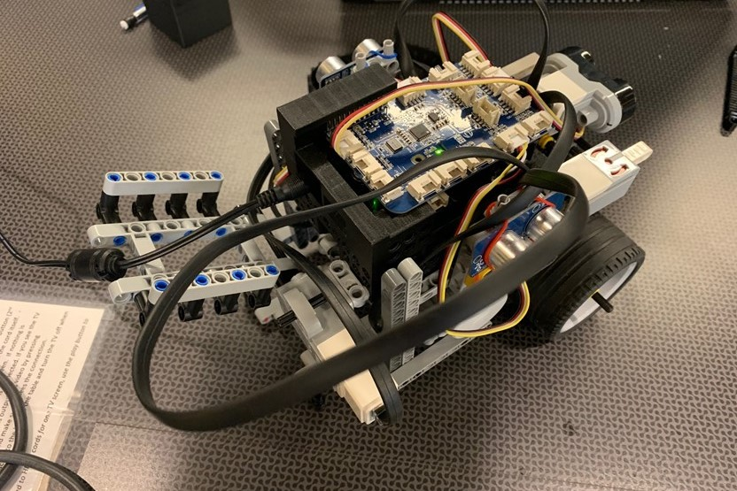
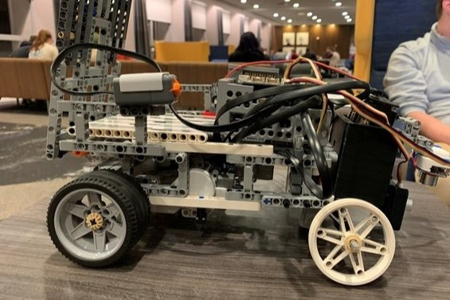

 
Projects
My most recent project was in Heat and Mass Transfer Lab. In that lab, we were placed on small teams and were tasked with creating an experiment to demonstrate multiple topics that we had learned in the process of the course. My team designed an experiment to see how free convection and material properties of a frying pan affects the maximum temperature, time to heat, and time to cool. We designed the experiment and ran it using three different types of pans. For a full detail of the methods and results feel free to check out the report!
Frying Pan ReportAnother recent project of mine was through my CAD and Rapid Prototyping course in the spring of 2021. In this class, the primary goal was to create a new mechanical toy with a small team. My team drew our inspiration from Purdue Basketball, designing 'Mackey Mania' a 2 player baksetball themed pinball style game. Each player had 2 paddles and a goal to score on. The goal was to score on your opponents goal by hitting it into their slot while avoiding the spinning and sliding obstacles on the board. A full breakdown can be seen in the report!
Mackey Mania ReportIn the spring on my sophomore year, I was first introduced to many of the mechanical engineering product design strategies through the sophomore design course. In this class, the goal was to develop a product that is currently not on the market that can make someone's life better. My team worked on designing a freezer lift shelf that would be intended for use by the elderly and disabled who own drawer freezers and struggle to access the items in it. While the beginning of the COVID-19 pandemic halted the ability to prototype the device, a full CAD model and report were created to demonstrate its feasibitlity and design.
Freezer Lift ReportIn my final semester before transitioning into mechanical engineering, I was on a team for the first year engineering course that had the task of building a small robot using a RaspberryPi, GrovePi, and BrickPi to navigate a maze, avoiding magnetic and infrared signals. The robot was also aimed at depositing cargo in a friendly manner. The overarching theme was for a small-version prototype of a robot that could be used in disaster areas to deliver needed supplies.
Maze Robot ReportDuring my very first semester at Purdue, the first year enginering course I was in had the goal of using a Raspberry Pi, Grove Pi, and Brick Pi to build a small robot meant to follow a line, overcome obstacles and hills, and deliver cargo to a specified location. This robot was meant to represent a small scale martian rover for a possible future where food and other resource replenishment is necessary.
Mars Rover Report